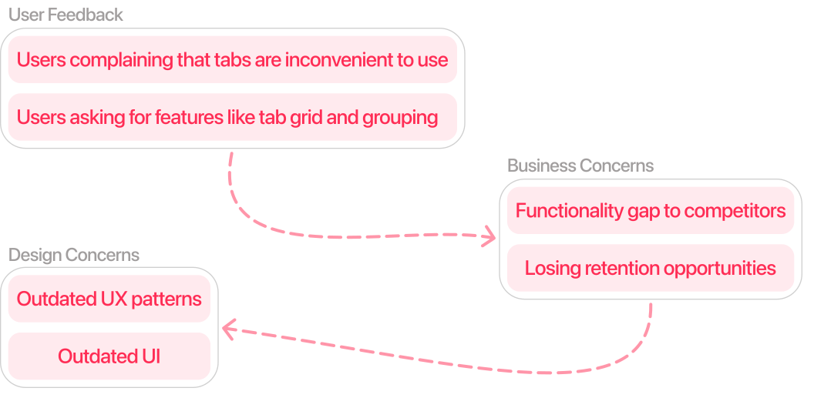
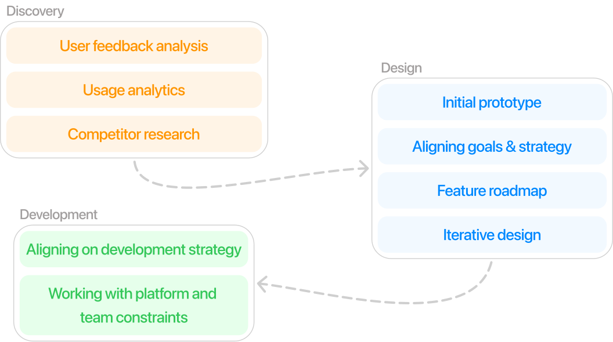
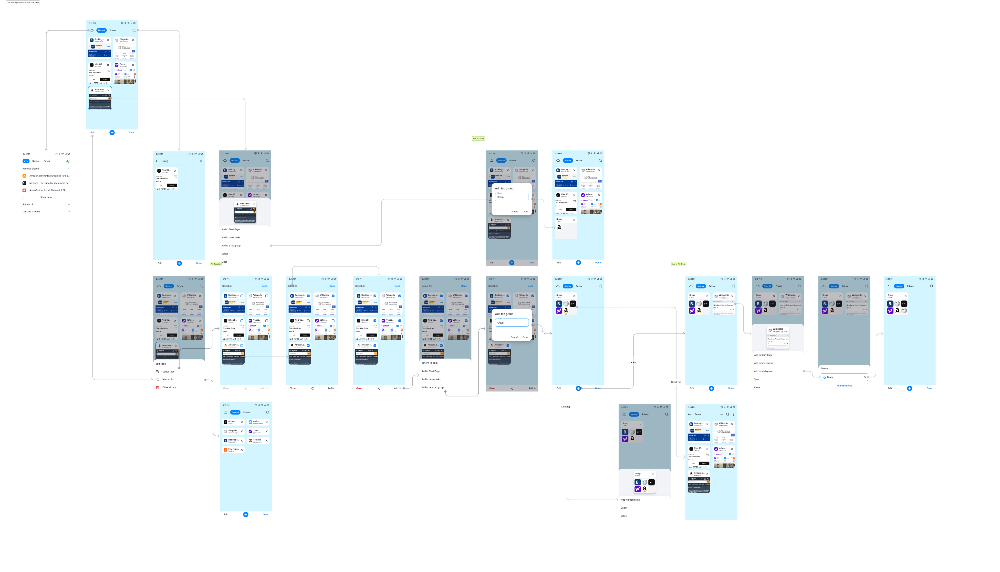

Tab Management Redesign
Cross-platform tab redesign with grouping functionality

Redesigned tab management from cluttered list to organized, groupable interface with improved visual hierarchy
Impact
1.8% Day 1 retention improvement across iOS and Android (1.2% iOS, 0.6% Android)
Led end-to-end design for 4M users. Introduced tab grouping, flexible organization, and platform-specific improvements. Shipped iOS complete in 6 months, Android UI improvements with grouping foundations.
Problem
Power users with 20+ tabs couldn't find what they needed. Chrome and Safari offered grouping. We didn't. This table-stakes gap was hurting retention.
User Feedback
Users were complaining that tabs were inconvenient to use and explicitly asking for features like tab grid and grouping that competitors already offered.
Business Concerns
We had a functionality gap to Safari and Chrome—a table-stakes feature we were missing. This was costing us retention opportunities with our most engaged users.
Design Concerns
The interface was using outdated UX patterns from our 2018 launch, with poor visual hierarchy and a split UI that made tab management unnecessarily complex.

Solution
Discovery
Started with user feedback analysis and usage analytics to identify power user behavior patterns with 20+ tabs. Conducted competitor research on Safari, Chrome, and Edge to understand existing solutions.
Design
Built initial prototypes to validate grouping as the top user need. Aligned goals and strategy with product and engineering teams, created a feature roadmap prioritizing iOS for complete implementation. Explored 15+ grouping interaction patterns through iterative design—testing drag-and-drop, batch selection, and menu-based approaches.
Development
Worked closely with iOS and Android teams to align on development strategy. iOS had larger team capacity, enabling faster development. Navigated platform constraints including Android performance limitations. Delivered iOS complete in 6 months, with Android receiving UI improvements and grouping foundations.

Initial prototype

Explored 15+ interaction patterns before converging on final direction
Flexible grouping interactions
Flexible grouping through batch selection for power users and drag-and-drop for quick organization. Customizable group names and easy menu access

Mode Switcher

Tab mode switcher allowing users to toggle between Synced, Normal, and Private modes directly within the tab manager. Works across devices and adapts to dark mode.
Android Performance Solution

Performance solution for older Android devices—toggle between rich tab previews and efficient list mode. Turned constraint into user control feature.
Private Mode Experience
Private mode with distinct visual experience, different color scheme, and private-specific tab groups—reinforcing Aloha's privacy-first positioning
Applied full grouping functionality to private tabs with distinct visual treatment
Cross-Platform Implementation

Platform-specific implementations—iOS shipped complete grouping functionality, Android received UI improvements
Key Learnings
Platform Pragmatism Over Perfectionism
I initially wanted to ship iOS and Android simultaneously with identical features. Resource constraints forced us to ship iOS complete while Android got foundations. This sequential approach actually worked better—we learned from iOS launch before building Android grouping. Taught me to prioritize user value over process perfection.
User Needs Beat Competitor Parity
Started by matching Safari and Chrome features exactly. User research revealed power users needed organization tools, not just visual parity with competitors. Focusing on the actual problem (too many tabs) rather than feature matching delivered better results—1.8% retention lift proved it.
Small Interactions, Big Impact
The "big" feature was grouping, but users raved about drag-and-drop, batch selection, and mode switching in feedback. These interaction details mattered more than I expected. Now I spend more time on how features work, not just what they do.
Constraints Can Become Features
Android performance issues threatened to delay launch. Instead of waiting for optimization, we added view switching (grid vs list). Turned a technical limitation into user control. This reframed how I think about constraints—they're not just problems to solve, but sometimes opportunities to give users choice.
Aloha Browser
Read full case study